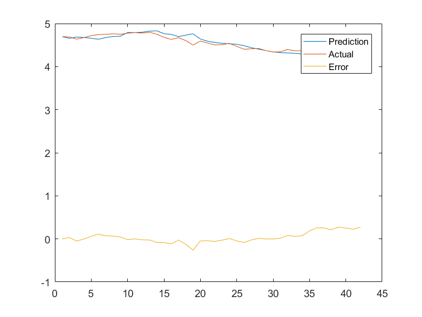

Contents
clear all
filename1 = 'smyrb_fin.csv';
Ftx = csvread(filename1,1,1);
date = readtable('JPNGDPq - Copy.xls');
St = Ftx(:,1);
m = Ftx(:,2);
y = Ftx(:,3);
r = Ftx(:,4);
b = Ftx(:,5);
X = [ones(size(m)) m y r b];
Y = regress(St,X)
a0 = Y(1,:);
a1 = Y(2,:);
a2 = Y(3,:);
a3 = Y(4,:);
a4 = Y(5,:);
Warning: Variable names were modified to make them valid MATLAB identifiers. The
original names are saved in the VariableDescriptions property.
Y =
1.3923
1.0349
0.5124
-0.0210
-3.3254
h = 1
h = 1;
L = [size(St)/2];
L = L(:,1);
pred_s = zeros(length(St),1);
evec = zeros(length(St),1);
for i=1:42
ydata = St(1:i+41);
xdata = [ones(41+i,1),m(1:i+41),y(1:i+41),r(1:i+41),b(1:i+41)];
coef = inv(xdata'*xdata)*xdata'*ydata;
pred_s(41+i+1) = [1,m(41+i+1),y(41+i+1),r(41+i+1),b(41+i+1)]*coef;
evec(41+i+1) = St(41+i+1) - pred_s(41+i+1);
end
MSE1=evec'*evec/42;
MSE_rw1=(St(43:84)-St(42:83))'*(St(43:84)-St(42:83))/42;
t=1:42;
figure
plot(t,pred_s(43:84),t,St(43:84),t,evec(43:84))
legend('Prediction','Actual','Error')

h = 2
h = 2;
L = [size(St)/2];
L = L(:,1);
pred_s = zeros(length(St),1);
evec = zeros(length(St),1);
for i=1:41
ydata = St(1:i+41);
xdata = [ones(41+i,1),m(1:i+41),y(1:i+41),r(1:i+41),b(1:i+41)];
coef = inv(xdata'*xdata)*xdata'*ydata;
pred_s(41+i+1) = [1,m(41+i+1),y(41+i+1),r(41+i+1),b(41+i+1)]*coef;
evec(41+i+1) = St(41+i+1) - pred_s(41+i+1);
end
MSE2=evec'*evec/42;
MSE_rw2=(St(44:84)-St(42:82))'*(St(44:84)-St(42:82))/42;
h = 3
h = 3;
L = [size(St)/2];
L = L(:,1);
pred_s = zeros(length(St),1);
evec = zeros(length(St),1);
for i=1:40
ydata = St(1:i+41);
xdata = [ones(41+i,1),m(1:i+41),y(1:i+41),r(1:i+41),b(1:i+41)];
coef = inv(xdata'*xdata)*xdata'*ydata;
pred_s(41+i+1) = [1,m(41+i+1),y(41+i+1),r(41+i+1),b(41+i+1)]*coef;
evec(41+i+1) = St(41+i+1) - pred_s(41+i+1);
end
MSE3=evec'*evec/42;
MSE_rw3=(St(45:84)-St(42:81))'*(St(45:84)-St(42:81))/42;
h = 4
h = 4;
L = [size(St)/2];
L = L(:,1);
pred_s = zeros(length(St),1);
evec = zeros(length(St),1);
for i=1:39
ydata = St(1:i+41);
xdata = [ones(41+i,1),m(1:i+41),y(1:i+41),r(1:i+41),b(1:i+41)];
coef = inv(xdata'*xdata)*xdata'*ydata;
pred_s(41+i+1) = [1,m(41+i+1),y(41+i+1),r(41+i+1),b(41+i+1)]*coef;
evec(41+i+1) = St(41+i+1) - pred_s(41+i+1);
end
MSE4=evec'*evec/42;
MSE_rw4=(St(46:84)-St(42:80))'*(St(46:84)-St(42:80))/42;
h = 5
h = 5;
L = [size(St)/2];
L = L(:,1);
pred_s = zeros(length(St),1);
evec = zeros(length(St),1);
for i=1:38
ydata = St(1:i+41);
xdata = [ones(41+i,1),m(1:i+41),y(1:i+41),r(1:i+41),b(1:i+41)];
coef = inv(xdata'*xdata)*xdata'*ydata;
pred_s(41+i+1) = [1,m(41+i+1),y(41+i+1),r(41+i+1),b(41+i+1)]*coef;
evec(41+i+1) = St(41+i+1) - pred_s(41+i+1);
end
MSE5=evec'*evec/42;
MSE_rw5=(St(47:84)-St(42:79))'*(St(47:84)-St(42:79))/42;
MSEmat = [MSE1 MSE2 MSE3 MSE4 MSE5]
MSE_rwmat = [MSE_rw1 MSE_rw2 MSE_rw3 MSE_rw4 MSE_rw5]
MSEmat =
0.0155 0.0138 0.0126 0.0111 0.0093
MSE_rwmat =
0.0023 0.0049 0.0066 0.0099 0.0145